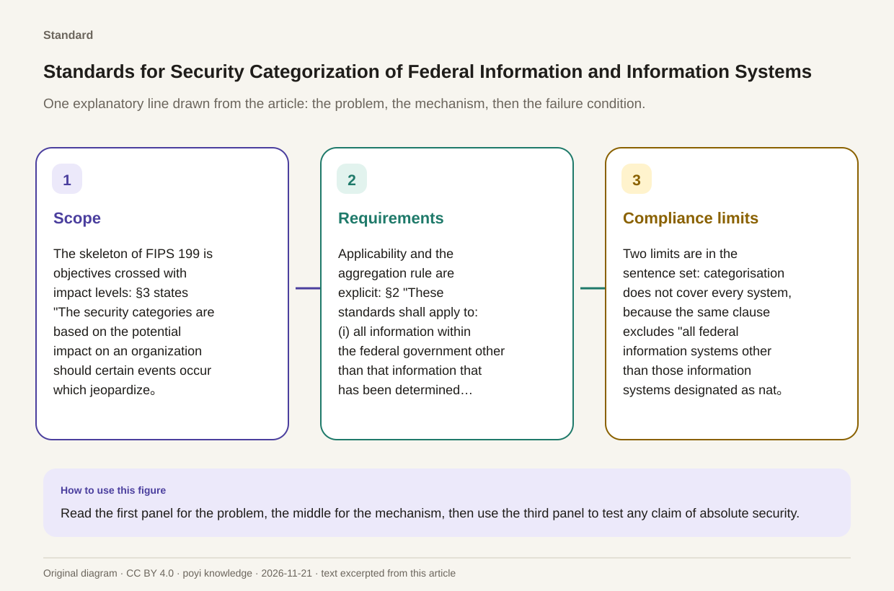
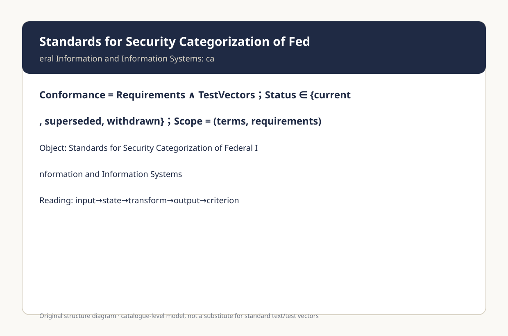

Principles
Standard: Standards for Security Categorization of Federal Information and Information Systems (联邦信息与信息系统安全分类标准). The skeleton of FIPS 199 is objectives crossed with impact levels: §3 states "The security categories are based on the potential impact on an organization should certain events occur which jeopardize the information and information systems needed by the organization to accomplish its assigned mission, protect its assets, fulfill its legal responsibilities, maintain its day-to-day functions, and protect individuals." and takes the three objectives from FISMA — "The FISMA defines three security objectives for information and information systems" — confidentiality, integrity and availability, with confidentiality quoted from 44 U.S.C. as "Preserving authorized restrictions on information access and disclosure, including means for protecting personal privacy and proprietary information", the source appending the [44 U.S.C., Sec. 3542] attribution.

Why it matters
A shared categorisation exists so risk judgements become comparable: the text stresses "Security categories are to be used in conjunction with vulnerability and threat information in assessing the risk to an organization." and defines the consequences outside the objectives themselves — "A loss of confidentiality is the unauthorized disclosure of information." — mapping disclosure, tampering and outage onto discussable impact values.
Applications
Applicability and the aggregation rule are explicit: §2 "These standards shall apply to: (i) all information within the federal government other than that information that has been determined pursuant to Executive Order 12958, as amended by Executive Order 13292, or any predecessor order, or by the Atomic Energy Act of 1954, as amended, to require protection against unauthorized disclosure and is marked to indicate its classified status" — the carve-out is classified information that is so marked — and "Agency officials shall use the security categorizations described in FIPS Publication 199 whenever there is a federal requirement to provide such a categorization". At system level the value is the maximum — "For an information system, the potential impact values assigned to the respective security objectives (confidentiality, integrity, availability) shall be the highest values (i.e., high water mark) from among those security categories that have been determined for each type of information resident on the information system".

Limits & attacks
Two limits are in the sentence set: categorisation does not cover every system, because the same clause excludes "all federal information systems other than those information systems designated as national security systems as defined in 44 United States Code Section 3542(b)(2)"; and it binds only the federal government, others "may consider" it — "State, local, and tribal governments as well as private sector organizations comprising the critical infrastructure of the United States may consider the use of these standards as appropriate."
History
The standard is named "Standards for Security Categorization of Federal Information and Information Systems" and dated February 2004 in its own front matter; effectivity is stated as "These standards are effective upon approval by the Secretary of Commerce." and the division of labour with later guidance is set out in §1 — "Subsequent NIST standards and guidelines will address the second and third tasks cited."
Worked example & verification
Formal model and reproduction steps
[S=\min_i S_i,\quad S_i\in{\text{密钥强度},\text{分组安全},\text{实现安全}}]
Standards for Security Categorization of Federal Information and Information Systems: the registered public parameters, key material or randomness, and message are mapped through the stated transformation to an output checked against the registered criterion. The worked example is a structural reproduction, not a new test vector; parameter ranges, standard versions and implementation details remain source-bound.
References
- Wikipedia search entry for 联邦信息与信息系统安全分类标准. https://zh.wikipedia.org/w/index.php?search=%E8%81%94%E9%82%A6%E4%BF%A1%E6%81%AF%E4%B8%8E%E4%BF%A1%E6%81%AF%E7%B3%BB%E7%BB%9F%E5%AE%89%E5%85%A8%E5%88%86%E7%B1%BB%E6%A0%87%E5%87%86
- Handbook of Applied Cryptography (Menezes, van Oorschot, Vanstone). https://www.cacr.math.uwaterloo.ca/hac/